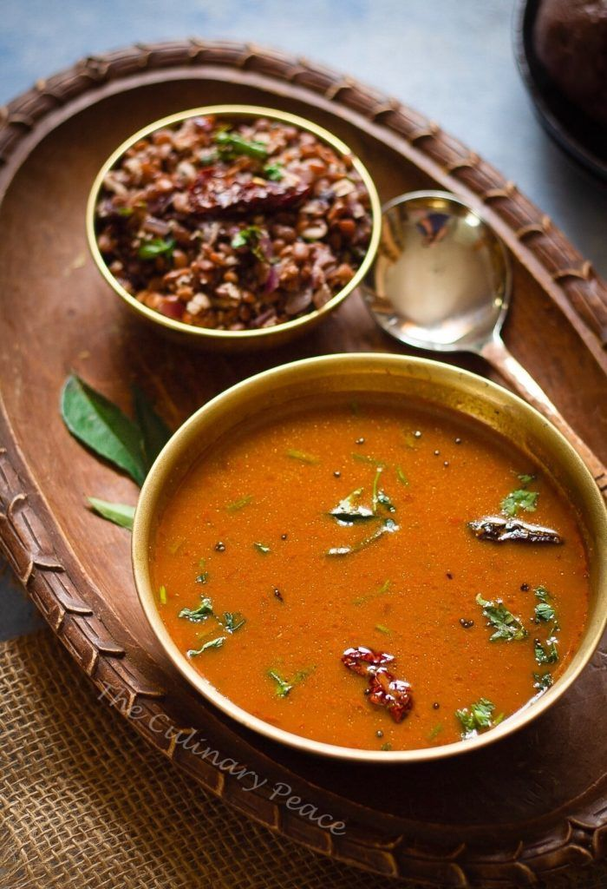

Recipe
Ingredients:
- Horse Gram (Kollu)
- Tamarind paste
- Tomatoes
- Ginger, garlic
- Spices: Garam masala, red chili powder, turmeric, coriander powder
Nutrients:
- Protein: Kollu is rich in plant-based protein.
- Iron: It helps in preventing anemia.
- Fiber: Horse gram is high in fiber, promoting digestive health.
Health Benefits:
- Supports muscle repair with protein.
- Aids digestion and prevents constipation with fiber.
- Helps in blood circulation and reduces the risk of anemia with its iron content.
Process
To make Kollu, soak horse gram (kollu) overnight. Pressure cook the soaked gram with water, turmeric, and salt until soft. In a separate pan, sauté onions, garlic, ginger, and green chilies in oil. Add the cooked kollu and blend everything into a smooth soup.
Add tamarind paste, coriander powder, cumin powder, and a pinch of asafoetida for flavor. Garnish with fresh coriander leaves.
Leave a comment